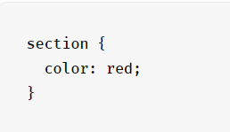
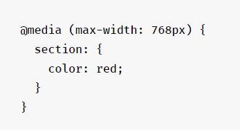

Основы CSS
Аббревиатура CSS расшифровывается как Cascading Style Sheets, что в переводе означает
«каскадные таблицы стилей». Это язык разметки, используемый для визуального оформления
веб-сайтов.
Объекты, расположенные на странице, размещаются с помощью HTML. А вот CSS отвечает за
то, как эти объекты выглядят. Их размер, цвет, фоновое изображение, степень прозрачности,
расположение относительно других элементов, поведение при наведении курсора, визуальное
изменение кнопок при нажатии и т.п.
Практически любые «внешние проявления» сайта создаются с помощью CSS.
Это стиль ваших страниц.
Синтаксис разметки
Язык CSS быстро стал стандартом в веб-разработке, потому что он позволяет быстро
изменить визуальное оформление сайта, не прибегая к использованию более сложных языков
программирования.
Достаточно ознакомиться с простейшими правилами CSS, и можно легко собрать вполне
симпатичный сайт со всем необходимым контентом. «Простота» обеспечивается за счет
понятного синтаксиса.
Синтаксис CSS в отдельном файле в соответствующем формате (.css) выглядит так:
Селектор – это ссылка на элемент в HTML, над которым будет вестись работа (оформление).
Свойство – определенная характеристика элемента, которую нужно изменить. Например, размер или цвет.
Значение – цифровое или текстовое обозначение для выбранного свойства.
Пример:
Медиазапросы и тег <style>
Выше был продемонстрирован базовый синтаксис, но он может быть куда более замысловатым. Например, для создания стилей под различные разрешения экранов используются запросы @media. Они выглядят так:

Такой код изменит цвет текста на красный в разделе section только для экранов с
разрешением меньше 768 пикселей.
А еще CSS-разметку можно использовать прямо в HTML-файлах для тестирования стилей
и внесения мелких изменений.
О концепции деления контента и его оформления
Сама идея разделить контент и его оформление на две части появилась в связи с
необходимостью создавать сайты более сложных форматов – с уникальными стилевыми
решениями, красивыми шрифтами, анимациями, произвольным порядком блоков и кучей
других деталей, вынуждающих верстальщиков искать новые пути взаимодействия с HTML-
документами.
Постепенно вебмастеры и разработчики отказались от стандартного оформления страниц с
помощью таблиц (это встроенный в HTML синтаксис, не требующий дополнительных инструментов
для оформления), потому что это усложняло структуру страниц. HTML-файлы сильно раздувались, ими было сложно управлять, а способов оформить хотя бы текст больше не становилось. Но всех спас CSS.
Правда, даже CSS может заметно увеличить размеры HTML и сделать его трудночитаемым,
если применять каскадные таблицы прямо в основном документе. Поэтому за правило взято
оформление CSS-разметки в отдельном файле, который затем подключается к условному
index.html, а тот уже подтягивает нужные стили.
Пример хтмл этой страницы
Пример css этого сайта
Основные принципы построения макетов с помощью CSS
Одна из ключевых задач CSS в современной верстке – создание макетов сайта. HTML уже
не играет такой важной роли в том, как будут размещены объекты. HTML-документ отвечает
за структуру и вложенность элементов, что упрощает чтение сайтов скринридерами и
дальнейшую разметку с использованием каскадных стилей.
Для расположения элементов на «полотне» сайта используются две основные методики:
Flex – позволяет автоматически распределить объекты в блоке за счет создания блоков-оберток со свойством flex.
Grid – позволяет отказаться от оберток и размещать объекты по сетке.
Как изучить и начать использовать CSS?
Каскадные таблицы стилей – на удивление интуитивная вещь. Даже новички успешно справляют
с самостоятельным изучением разметки без обращения за помощью к профессиональным
разработчикам и дизайнерам. Достаточно обращаться в Google за описанием свойств стилей
и запоминать их.
Но есть загвоздки. В частности, они касаются методик создания макетов. С ходу понять
их тяжело, поэтому нужно хорошее руководство.